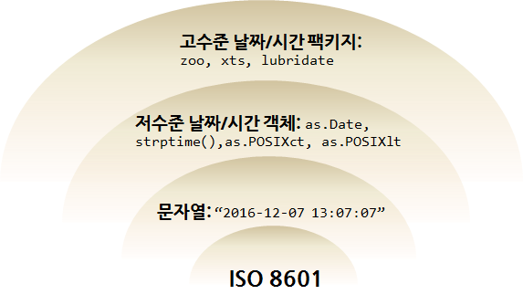

데이터 과학 – 금융(Finance)
날짜/시간 데이터 기초
날짜와 시간 1
날짜정보와 시간정보는 R에서 다른 클래스를 통해 구현된다. 날짜(Date)는 1970-01-01을 기준으로 R 내부적으로 정수형으로 저장되고, 시간(Time)도 R 내부적으로 1970-01-01을 기준으로 초단위로 저장된다.
- 날짜(Date):
Date클래스 - 시간(time):
POSIXct,POSIXlt클래스POSIXct클래스는 매우 큰 정수로 시간정보를 데이터프레임으로 저장할 때 유용하다.POSIXlt클래스는 리스트 자료형으로 요일, 년, 월, 일 등의 정보를 리스트 내부 원소로 저장되어 유용하다.

ISO 8601 국제 표준을 근간으로 날짜 및 시간을 문자열로 표현하면 이를 R에서 인식할 수 있도록 저수준 시간/날짜 객체 변환 함수를 통해 시간/날짜 객체로 변환을 한다. 날짜와 시간 객체로 변환을 하고 나면 고수준 날짜/시간 팩키지를 통해 다양한 날짜/시간 관련 분석작업을 손쉽게 수행한다.
먼저 ISO 8601 기준에 맞춰 문자열(“1970-01-01”)을 as.Date 함수를 통해 날짜 객체로 변환한다. 내부적으로 보면 정수 0 으로 저장된다. 기준일 다음 “1970-01-03”일을 보면 숫자 2가 된다.
x <- as.Date("1970-01-01")
x[1] "1970-01-01"
unclass(x)[1] 0
unclass(as.Date("1970-01-03"))[1] 2
시간(time) 자료형 확인
Sys.time() 함수를 통해 현재 시스템 시간정보를 받아내면 POSIXct 클래스임이 확인되고, unclass() 정보를 통해 내부적으로 정수값으로 저장된 것이 확인된다.
x <- Sys.time()
x[1] "2021-08-27 20:35:46 KST"
unclass(x)[1] 1630064147
문자열을 받아 as.POSIXlt(), as.POSIXct() 함수를 사용해서 시간자료형으로 변환시킨다. POSIXlt 자료형으로 변환시킨 경우 리스트로 저장되어 있어 시, 분, 초, 요일등 하위 원소값으로 뽑아낼 수 있다.
x <- Sys.time()
x[1] "2021-08-27 20:35:46 KST"
p <- as.POSIXlt(x)
names(unclass(p)) [1] "sec" "min" "hour" "mday" "mon" "year" "wday" "yday"
[9] "isdst" "zone" "gmtoff"
p$wday[1] 5
날짜, 시간 자료형 변환
결국 문자열을 받아 날짜, 시간 자료형으로 변환시키는데 strptime() 함수를 사용한다. 문자열을 입력으로 받아 문자열의 날짜, 시간 형식을 매칭하여 넘기게 되면 날짜, 시간 자료형으로 변환된다.
datestring <- c("2006-01-08 10:07:52", "2006-08-07 19:33:02")
x <- strptime(datestring, "%Y-%m-%d %H:%M:%S", tz = "EST5EDT")
x[1] "2006-01-08 10:07:52 EST" "2006-08-07 19:33:02 EDT"
class(x)[1] "POSIXlt" "POSIXt"
날짜, 시간 데이터 기본 연산
문자열 데이터를 날짜 시간 자료형으로 변환시키게 되면 컴퓨터 내부적으로 윤년, 윤초, 일광절약시간, 표준시간대를 자동으로 계산해 준다. “2012-03-01”, “2012-02-28” 두 날짜사이는 보통 하루 차이가 나지만 윤년이 있는 경우 이틀이 된다.
x <- as.Date("2012-03-01")
y <- as.Date("2012-02-28")
x-yTime difference of 2 days
시간이 5시간 차이가 나지만, 표준시간대가 다른 경우 한 시간 차이만 난다.
x <- as.POSIXct("2012-10-25 01:00:00")
y <- as.POSIXct("2012-10-25 06:00:00", tz = "GMT")
y - xTime difference of 14 hours
날짜 시간 R 팩키지 2 3
날짜와 시간을 다루기 위한 팩키지가 다수 개발되었다. Data 클래스와 Time 클래스를 통해 날짜 뿐만 아니라 시간에 대한 데이터도 처리가 가능하다. 기본적으로 문자열 데이터를 저수준 날짜 및 시간 함수(as.Date, as.POSIXct, as.POSIXlt, strptime)를 통해 날짜 및 시간 데이터로 변환시킨 후에 고수준 날짜 및 시간 팩키지(zoo, xts, lubridate)로 작업을 진행하는 작업흐름을 갖는다.
ISO 8601 - 날짜와 시간 데이터 교환을 위한 국제 표준 4
ISO 8601(Data elements and interchange formats - Information interchange - Representation of dates and times) 표준은 국제 표준화 기구(ISO)에 의해 공포되었으며 1988년에 처음으로 공개었고, 표준 제정 목적은 날짜와 시간을 표현함에 있어 명백하고 잘 정의된 방법을 제공함으로써, 날짜와 시간의 숫자 표현에 대한 오해를 줄이고자 한다. 보편적 원칙은 다음과 같다.
- 날짜와 시간 값은 시간 단위의 가장 큰 것부터 가장 작은 것으로 정렬된다: 년도, 월(혹은 주), 일, 시, 분, 초, 그리고 초보다 더 작은 단위.
- 날짜와 시간은 각각 앞에 0을 붙여서(leading zeros) 유지해야 하는 고정된 자릿수(fixed number of digits)를 갖는다.
- 표현은 두 가지 형식 중 한 가지로 이루어질 수 있다. 하나는 최소한의 구분자를 이용한 기본 형식이고 다른 하나는 가독성을 높이기 위해 추가된 구분자를 이용한 확장 형식이다.
- 예를 들어, 2009년 1월 6일은 확장 형식으로 “2009-01-06”으로 쓰일 수 있으며, 애매모호함 없이 기본 형식에서는 “20090106”으로 간단히 쓰일 수 있다.
- 줄어든 정밀도를 위해, 날짜와 시간 표현에서 값들 중 어떤 숫자든지 제외될 수 있으나, 큰 단위가 앞에, 작은 단위가 뒤로 오는 순서는 유지해야 한다.
- 예를 들어, “2004-05”는 2004년 5월을 가르키는 유효한 ISO 8601 날짜이다. 이 형식은 결코 2004년의 지정되지 않은 달의 5일을 표현하는 것이 아니며 2004년부터 2005년 사이의 기간을 말하는 것이 아니다.
- 특정 애플리케이션에서의 필요성으로, 표준에서는 표현 내에서의 가장 작은 단위의 시간 값에 십진수 기반의 분수를 지원하고 있다.
anytime 팩키지
anytime, “anytime: Easier Date and Time Conversion”: 문자열을 받아 날짜/시간 자료형으로 변환하는데 특화되어 있다.
library(anytime)
library(tidyverse)
options(digits.secs=6) ## for fractional seconds below
Sys.setenv(TZ=anytime:::getTZ()) ## 시간대
anytime:::getTZ()[1] "Asia/Seoul"
anydate(20160101 + 0:2, tz=anytime:::getTZ())[1] "2016-01-01" "2016-01-02" "2016-01-03"
fasttime 팩키지
fasttime, “fasttime: Fast Utility Function for Time Parsing and Conversion”: 문자열을 받아 날짜/시간 자료형으로 정말 빠르게 변환하는데 특화되어 있다. 이런 경우 문자열이 가능하면 ISO 8601에 맞춰 준비되어야 된다.
마이크로 초단위 날짜/시간 데이터를 10,000개 생성시키고 나서 다음 방식으로 파싱해서 자료형을 변환시키는데 소요되는 시간을 비교해보자.
lubridate:ymd_hms()base:as.POSIXct()fasttime:fastPOSIXct()lubridate:fast_strptime()
fasttime 팩키지는 더이상 유지보수 되고 있지 않고, 이 팩키지를 바탕으로 lubridate에서 기능을 흡수하여 명실공히 속도와 편의성을 모두 장착한 시간/날짜 데이터를 다루는 막강한 팩키지로 거듭났습니다.
library(lubridate)
library(fasttime)Error in library(fasttime): there is no package called 'fasttime'
## 0. 난수 날짜/시간 생성
ts <- as.character(.POSIXct(runif(1e4) * unclass(Sys.time()), tz="Asia/Seoul"))
microbenchmark::microbenchmark(
## 1. lubridate로 자료형 변환
lubridate_ts = ymd_hms(ts, tz="Asia/Seoul"),
## 2. as.POSIXct로 자료형 변환
POSITct_ts = as.POSIXct(ts, tz="Asia/Seoul"),
## 3. fastPOSIXct로 자료형 변환
fasttime_ts = fastPOSIXct(ts, tz="Asia/Seoul"),
## 4. fast lubridate로 자료형 변환
fast_lubridate_ts = fast_strptime(ts, tz="Asia/Seoul", format="%Y-%m-%d %H:%M:%OS"),
times = 30
)Error: 'microbenchmark' is not an exported object from 'namespace:microbenchmark'
시간데이터 다루기
시간정보가 포함된 문자열 데이터 “2016-11-04 10:30:00” 정보를 받아 format="%Y-%m-%d %H:%M:%OS" 문자열 시간 형식을 strptime() 함수에 넘기면 문자열 데이터가 시간 데이터로 변환된다.
동영상 데이터를 처리할 경우 프레임 단위(초당 30프레임)로 동영상에 대한 데이터 정보가 저장된 경우, 이를 시간자료형으로 바꾸는 경우 seq 함수를 프레임 단위 by=인자로 넘기고, length.out =으로 데이터프레임 길이도 함께 넘긴다. 이를 키값으로 잡고 as.xts 함수에 넘기면 xts 객체로 변환된다. 이제 nseconds, nminutes 함수를 통해 동영상이 몇초인지, 몇분인지 쉽게 확인 가능하게 된다.
library(xts)
strptime("2016-11-04 10:30:00", format="%Y-%m-%d %H:%M:%OS")[1] "2016-11-04 10:30:00 KST"
dat <- read_csv("https://raw.githubusercontent.com/statkclee/identify_age_with_oxford_api/master/03_data/park_emo_01.csv")
dat$times <- strptime("2016-11-04 10:30:00", format="%Y-%m-%d %H:%M:%OS", tz="Asia/Seoul") + seq(1, by = 1/30, length.out = dim(dat)[1])
dat_xts <- as.xts(dat, order.by = dat$times)
nseconds(dat_xts)[1] 103
nminutes(dat_xts)[1] 2
시간데이터 파싱
데이터가 문자열로 저장되어 있고 년-월-일 오전/오후 시:분:초 형태를 갖는 시간자료를 R에서 처리하는 작업흐름은 다음과 같다.
- 데이터가 일관된 형태를 갖는 문자열인지 확인:
년-월-일 오전/오후 시:분:초 - 오전/오후 한글을 AM/PM으로 치환
lubridate팩키지parse_date_time함수를 사용해서 시간 자료형으로 변환:%Y-%m-%d %p %H:%M:%S- 두 시간 사이 지속시간을 계산:
as.period()함수를 활용하여 시:분:초 자료형을 유지 - 지속시간을 익숙한 전체 시간, 분, 초 단위로 변환: as.numeric(processing_duration, unit=“hours”)
시간 데이터
date_txt <- structure(list
(last_access_time = c("2016-11-02 오전 9:09:45",
"2016-11-05 오전 12:25:31", "2016-11-04 오전 2:24:46", "2016-11-30 오전 3:17:15",
"2016-11-10 오전 10:25:01", "2016-11-27 오전 1:40:30", "2016-11-29 오후 5:59:42",
"2016-11-26 오전 10:48:21", "2016-11-07 오전 8:45:43", "2016-11-27 오후 2:33:26"),
register_time = c("2016-11-01 오전 8:55:00", "2016-11-04 오후 3:04:48",
"2016-11-03 오후 11:36:59", "2016-11-30 오전 1:50:17", "2016-11-10 오전 10:14:51",
"2016-11-26 오후 1:50:32", "2016-11-29 오후 5:45:26", "2016-11-26 오전 10:37:41",
"2016-11-06 오후 7:18:34", "2016-11-27 오후 12:08:02")),
.Names = c("last_access_time", "register_time"),
row.names = c(NA, -10L), class = c("tbl_df", "tbl", "data.frame"))
date_txt# A tibble: 10 x 2
last_access_time register_time
<chr> <chr>
1 2016-11-02 오전 9:09:45 2016-11-01 오전 8:55:00
2 2016-11-05 오전 12:25:31 2016-11-04 오후 3:04:48
3 2016-11-04 오전 2:24:46 2016-11-03 오후 11:36:59
4 2016-11-30 오전 3:17:15 2016-11-30 오전 1:50:17
5 2016-11-10 오전 10:25:01 2016-11-10 오전 10:14:51
6 2016-11-27 오전 1:40:30 2016-11-26 오후 1:50:32
7 2016-11-29 오후 5:59:42 2016-11-29 오후 5:45:26
8 2016-11-26 오전 10:48:21 2016-11-26 오전 10:37:41
9 2016-11-07 오전 8:45:43 2016-11-06 오후 7:18:34
10 2016-11-27 오후 2:33:26 2016-11-27 오후 12:08:02
파싱된 시간 데이터
date_txt <- date_txt %>%
mutate(last_access_time_old = last_access_time,
register_time_old = register_time) %>%
mutate(last_access_time = ifelse(str_detect(last_access_time, "오전"),
str_replace(last_access_time, "오전", "AM"),
str_replace(last_access_time, "오후", "PM")),
register_time = ifelse(str_detect(register_time, "오전"),
str_replace(register_time, "오전", "AM"),
str_replace(register_time, "오후", "PM"))) %>%
mutate(last_access_time = parse_date_time(last_access_time, c("%Y-%m-%d %p %H:%M:%S")),
register_time = parse_date_time(register_time, c("%Y-%m-%d %p %H:%M:%S")),
processing_duration = as.period(last_access_time - register_time),
processing_hours = as.numeric(processing_duration, unit="hours"))
date_txt %>% dplyr::select(register_time, processing_duration, processing_hours) # A tibble: 10 x 3
register_time processing_duration processing_hours
<dttm> <Period> <dbl>
1 2016-11-01 08:55:00.000000 1d 0H 14M 45S 24.2
2 2016-11-04 15:04:48.000000 9H 20M 43S 9.35
3 2016-11-03 23:36:59.000000 2H 47M 47S 2.80
4 2016-11-30 01:50:17.000000 1H 26M 58S 1.45
5 2016-11-10 10:14:51.000000 10M 10S 0.169
6 2016-11-26 13:50:32.000000 11H 49M 58S 11.8
7 2016-11-29 17:45:26.000000 14M 16S 0.238
8 2016-11-26 10:37:41.000000 10M 40S 0.178
9 2016-11-06 19:18:34.000000 13H 27M 9S 13.5
10 2016-11-27 12:08:02.000000 2H 25M 24S 2.42
시계열 데이터 5 6
시계열에 관련된 다양한 데이터는 R 팩키지를 통해 얻을 수 있고, 많은 경우 시계열관련 책에 데이터가 포함되어 있고, 저자가 팩키지로 만들어 배포하는 형태가 많다.
- Ecdat - Data Sets for Econometrics
- Makridakis, Wheelwright and Hyndman (1998) Forecasting: methods and applications
- Hyndman, Koehler, Ord and Snyder (2008) Forecasting with exponential smoothing
- Hyndman and Athanasopoulos (2013) Forecasting: principles and practice
- Shumway and Stoffer (2011) Applied Statistical Time Series Analysis
- Applied Econometrics with R